Soa39mini について
Soa39miniは39キーの分割型キーボードで、右手親指部分に12mmトラックボールを搭載した無線キーボードです。Grin配列を採用し、17mmキーピッチでコンパクトに設計されています。ホームポジションから手を離さずにマウス操作が可能で、ゴムブッシュを使用した簡易ガスケットマウント構造により柔らかい打鍵感を実現しています。
組み立てを始める前に
組み立てを開始する前に、以下の重要な注意事項を必ずお読みください。
はんだ付けをする際には必ず電池を外してから行ってください。
電池が入ったままの状態でのはんだ付けは危険です。
このキーボードを車内に長時間放置しないでください。
長期間使用しない場合はキーボードから電池を外して保管してください。
XIAO、PMW3610センサー、SK6812MINI-E LEDのはんだ付けはとても難しいです。
細かいピッチのはんだ付けとなるため、十分に注意して作業してください。
作業前のチェックリスト
- ✅ 必要な部品と工具が揃っている
- ✅ 作業スペースが十分に確保されている
- ✅ 換気の良い場所で作業する
- ✅ 静電気対策を行っている
- ✅ はんだごての温度設定を確認している（260-280℃推奨）
目次
ステップ 1: 必要な部品の確認
キット内容品
- PCB（左右各1枚） 2枚
- TPUフォーム（左右各1枚） 2枚
- PMW3610センサー 1個
- センサーレンズ 1個
- 12mmステンレスボール 1個
- Chocソケット 39個
- SK6812MINI-E LED 2個
- ゴムブッシュ 8個
- 単四電池ホルダー 2個
- M2ネジ（10mm） 4本
- M1.4ネジ（5mm） 3本
- ゴム足 8個
- 3Dプリントケース（左右各1個） 2個
- 3Dプリントキーキャップ 39個
別途用意が必要な部品
読み込み中...
必要な工具
- はんだごて（温度調節機能付き推奨）
- はんだ
- フラックス
- プラスドライバー（M2,M1.4を回せるもの）
- USB-Cケーブル
- ピンセット
- ニッパー
- マスキングテープ
ステップ 2: Chocソケットのはんだ付け
Chocソケットを基板にはんだ付けします。ソケットは左右合わせて39個あります。
ソケットの向きに注意してください。PCB上のシルク印刷と合わせて取り付けます。
- PCBの裏面にChocソケットを配置します
- ソケットの向きがシルク印刷と合っているか確認します
- 片側の端子を先にはんだ付けします
- ソケットが浮いていないか確認し、反対側もはんだ付けします
- 全39個のソケットを同様に取り付けます
ステップ 3: SK6812MINI-Eのはんだ付け
RGB LED（SK6812MINI-E）をPCB裏面にはんだ付けします。LEDは向きがあるため、慎重に作業してください。
・LEDは熱に非常に弱いため、はんだごての温度は260-280℃に設定してください
・はんだ付け時間は1箇所あたり2-3秒以内に留めてください
・LEDの向きを間違えると動作しません。切り欠きの位置を必ず確認してください
- フラックスを塗布します
- GNDのパッドに予備はんだを少量盛ります
- LEDの向きを確認します（切り欠きがPCBのシルク印刷と合うように）
- ピンセットでLEDを持ち、予備はんだを溶かしながら位置を合わせます
- 他の3つのパッドをはんだ付けします
- 左右のLEDを同様に取り付けます
ステップ 4: PMW3610のはんだ付け
 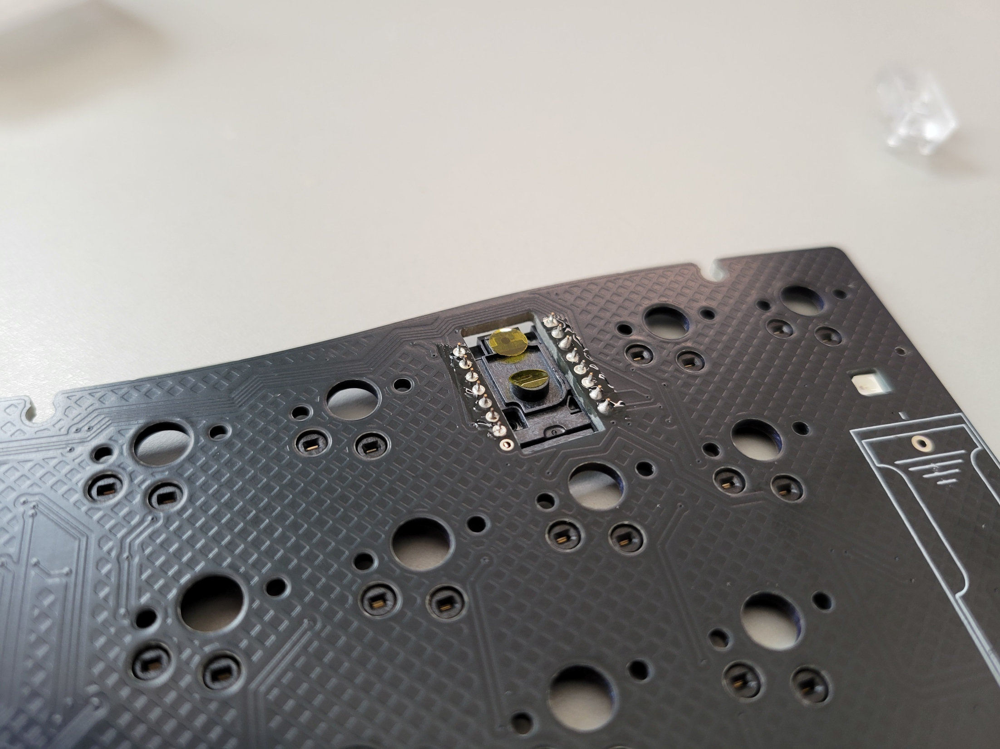
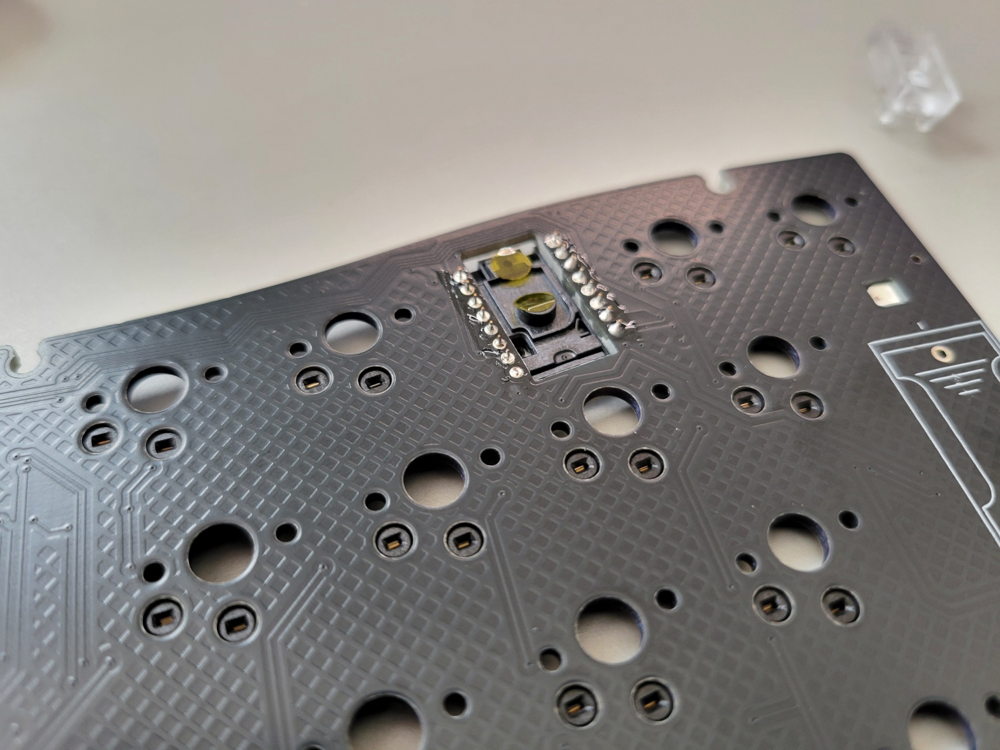
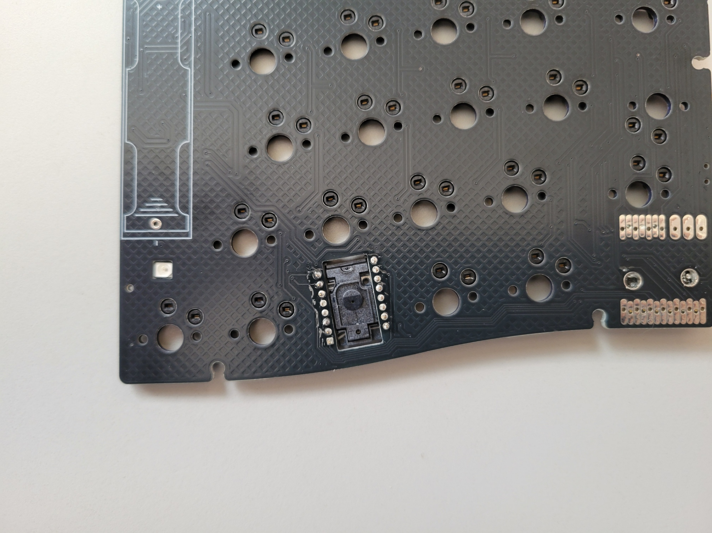
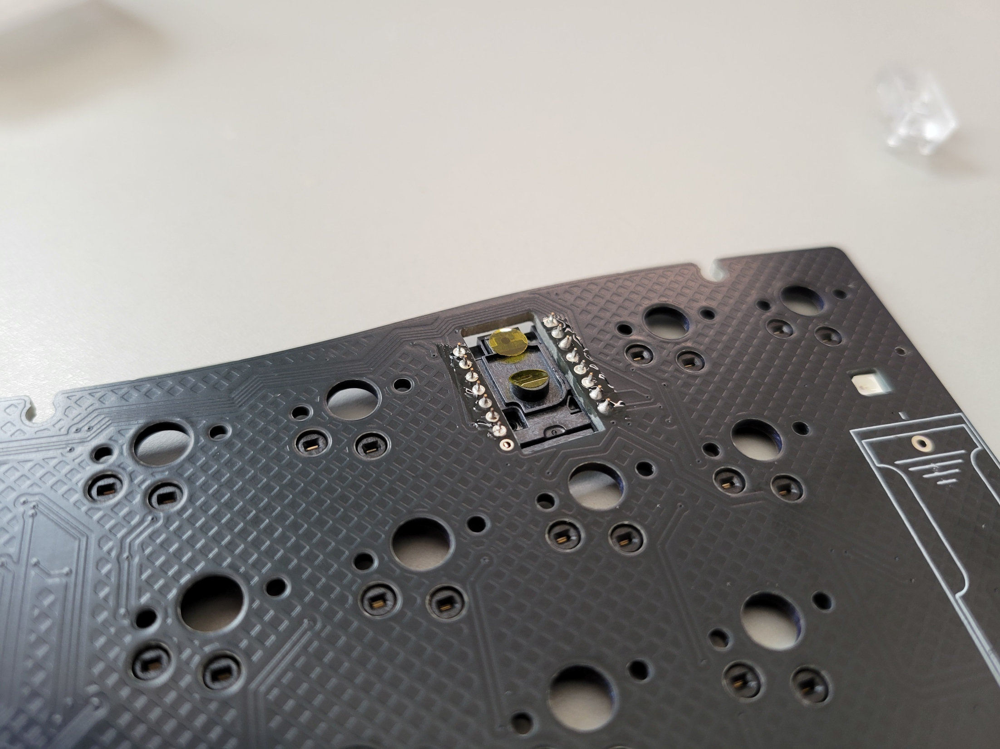
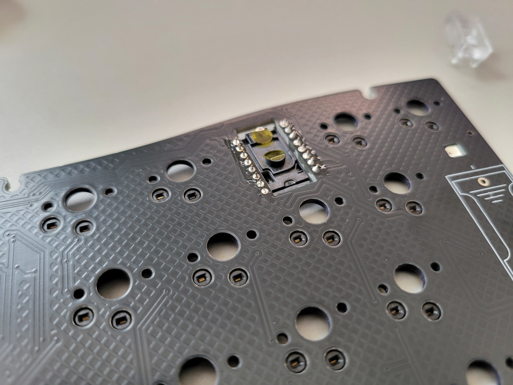
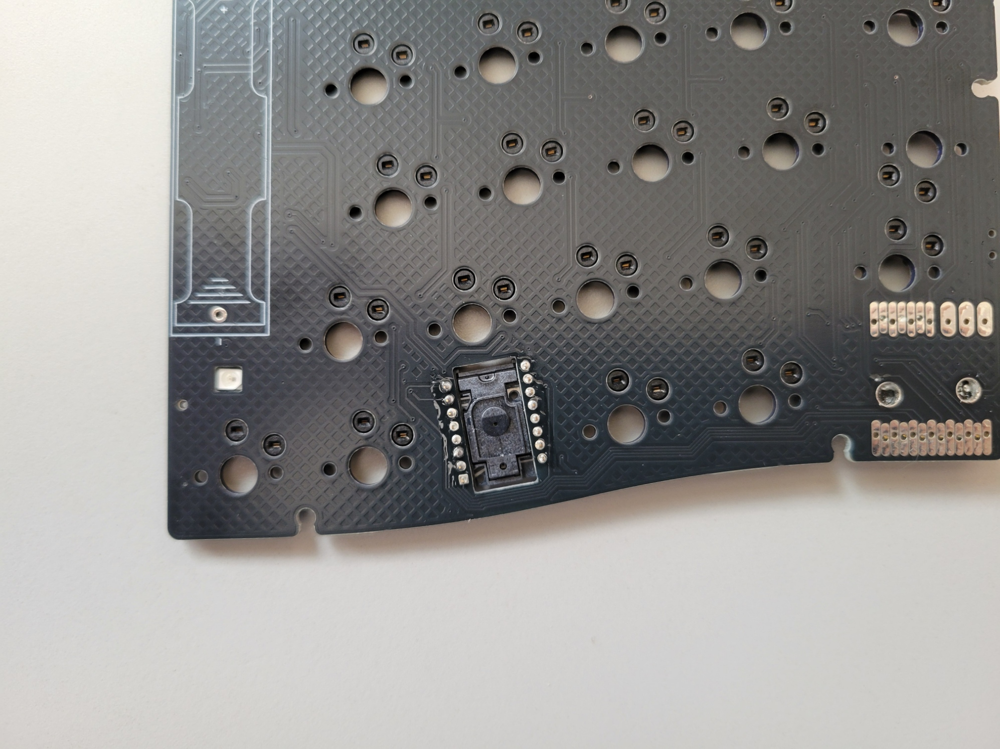
右手側のPCB裏面にトラックボールセンサー（PMW3610）をはんだ付けします。
PMW3610は細かいピッチのはんだ付けとなります。
ブリッジ（隣接ピン同士のショート）に十分注意してください。
- センサーの向きを確認します（PCBのシルク印刷と合わせる）
- センサーを基板に仮置きし、位置を確認します
- フラックスを塗布します
- 画像3枚目の赤丸を付けた対角の2ピンを先に仮止めします
- センサーの位置がずれていないか確認します
- 画像3枚目の黄丸以外の残りのピンをはんだ付けします
- 黄丸ピンの飛び出ているピンをニッパーで切る(切らないとスイッチに干渉してしまいます)
- あまり盛り上がらないように黄丸のピンをはんだ付けします。
- センサーの保護シールをはがします。
- センサーレンズを取り付けます
ステップ 5: XIAO nRF52840 Plusのはんだ付け
左右のPCBにXIAO nRF52840 Plusをはんだ付けします。XIAOは表面実装となります。
XIAOは細かいピッチのはんだ付けとなります。
向きを間違えないよう、USB-Cポートの位置を必ず確認してください。
- 左右のPCBの表側にXIAO nRF52840 Plusを配置
- ピンヘッダを写真のようにさし、位置を決める
- ピンヘッダをさしていない側の端子をはんだ付け
- ピンヘッダを外し、反対側の端子をはんだ付け
- 裏側の端子をはんだ付け
ステップ 6: 電池ホルダーのはんだ付け
 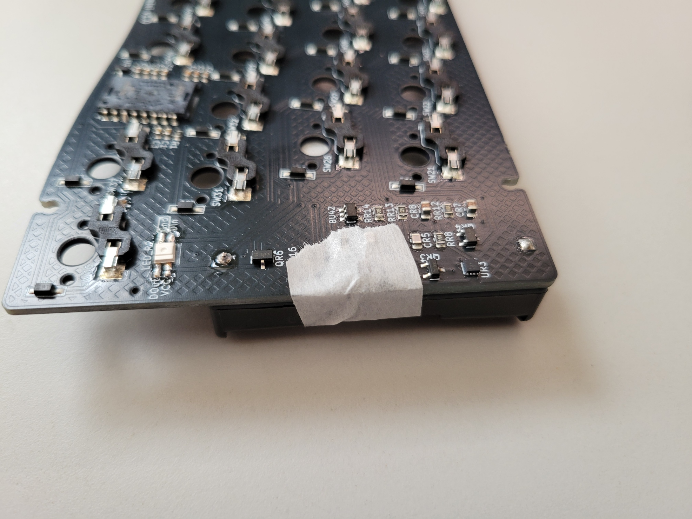
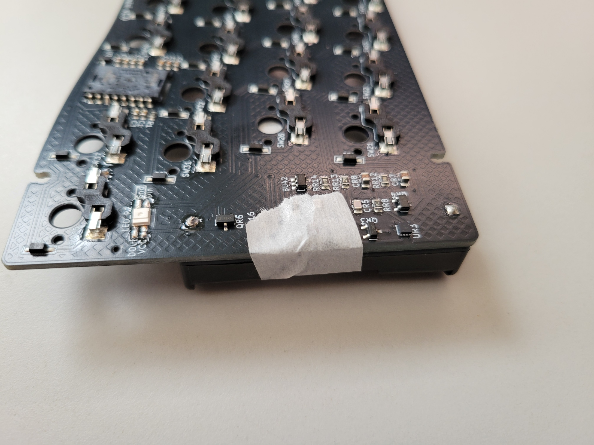
左右のPCB裏面に単四電池ホルダーをはんだ付けします。
電池ホルダーの極性（+/-）を間違えないように注意してください。
PCBのシルク印刷で極性を確認してから取り付けてください。
- 電池ホルダーを左右のPCBの表側に配置
- マスキングテープで仮固定
- 裏面から電池ホルダーの端子をはんだ付け
- はんだ付け後、飛び出している足をニッパーでカット
ステップ 7: ファームウェアの書き込み
ZMKファームウェアをXIAO nRF52840 Plusに書き込みます。
詳しい手順は下記の動画が参考になります。

↑ クリックして動画を視聴
- ZMKリポジトリをフォークする
- KeymapEditorでキーマップを変更し保存する
- ビルドが完了したらファームウェアをダウンロード
- 左のXiaoにUSB接続、リセットボタンを2回素早く押してブートローダーモードに入る
- settings_reset-seeeduino_xiao_ble-zmk.uf2を書き込み
- 右にも同様にsettings_reset-seeeduino_xiao_ble-zmk.uf2を書き込み
- 左にsoa39_left-seeeduino_xiao_ble-zmk.uf2を書き込み
- 右にsoa39_right-seeeduino_xiao_ble-zmk.uf2を書き込み
ステップ 8: 動作テスト
組み立てたキーボードの動作を確認します。
- 単四電池を電池ホルダーに入れる
- 左右のキーボードのスライドスイッチを奥側にして電源を入れる
- 左右のResetスイッチを同時に一度押す(これで左右のペアリングが完了)
- パソコンとBluetooth接続
- テストサイト（キーボードテスター）でピンセットでソケットを導通させて、全てのキーが正常に入力できることを確認
- センサーが正常に動作することを確認
ステップ 9: トラックボールケースの組み立て
トラックボールケースを組み立てます。
- ベアリングをトラックボールケースに取り付け
- トラックボールをはめて正常に動作することを確認
ステップ 10: スイッチの取り付け
ファームウェアの書き込みと動作テストが完了したら、スイッチを取り付けます。
- Form_sheetをpcbに敷く
- その上にスイッチプレートを載せてスイッチをはめる
- 再度、全てのキーの動作をテスト
ステップ 11: ケースの組み立て
 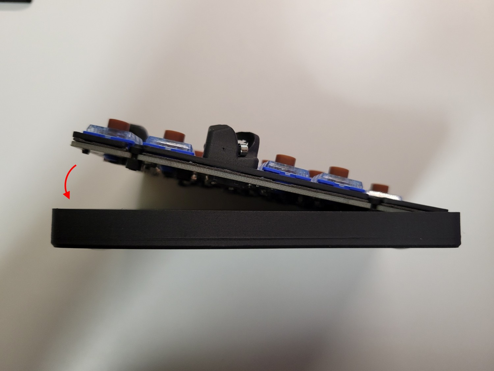
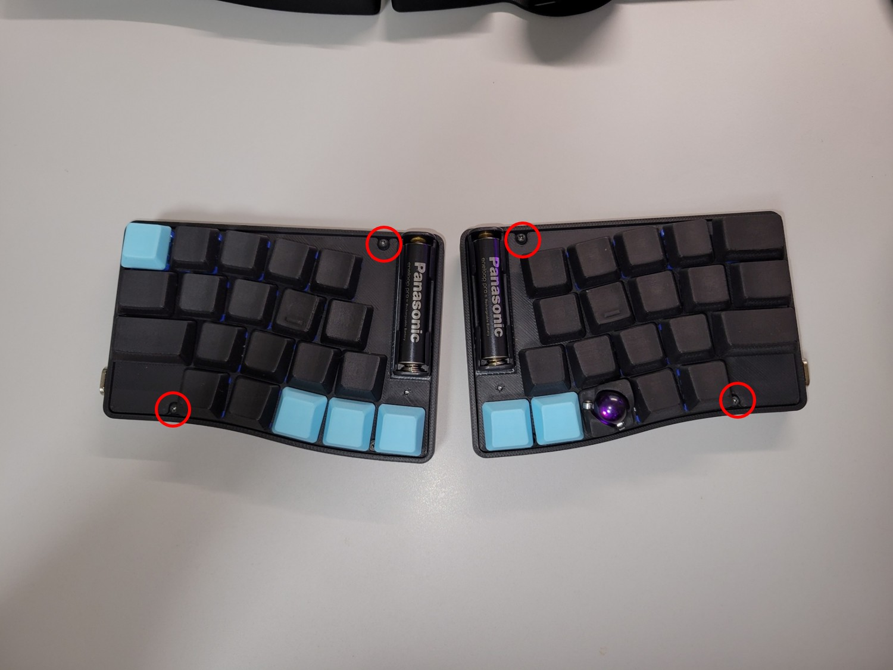
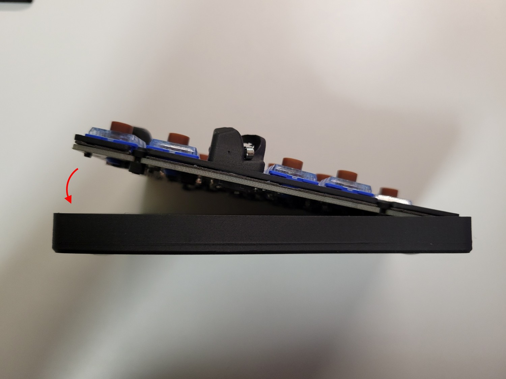
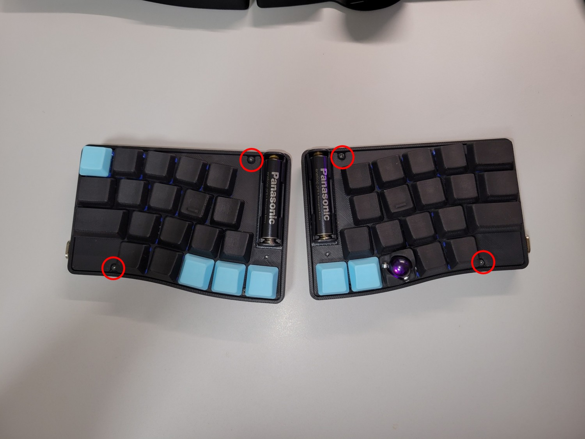
最後にケースを組み立てて完成です。
- PCBにゴムブッシュを取り付け(長いほうが下になるように)
- ゴムブッシュ内にネジを入れる
- ネジでケースにPCBを固定(画像3枚目丸を付けた場所)
- キーキャップをはめる
完成！
お疲れさまでした！
LEDインジケータの説明
Soa39miniにはRGB LEDが搭載されており、キーボードの状態を色で表示します。
電源投入時のステータス表示
電源投入時に2回LEDが光ります。1回目がバッテリー残量、2回目がBluetooth接続状態です。
バッテリー残量
- 緑残量多い
- 黄残量中程度
- 赤残量少ない
Bluetooth接続状態
- 青接続済み
- 黄ペアリング待機中
- 赤切断状態
レイヤー表示
各レイヤーには固有の色が設定されており、レイヤーが有効な間その色が表示されます。
黒
赤
緑
黄
青
紫
水色
マウス操作について
Soa39miniの右手側に搭載された12mmトラックボールによるマウス操作について説明します。
Auto Mouse Layer
トラックボールを操作すると、自動的にレイヤー1（Mouse）に移動し、LEDが赤色に点灯します。
マウスボタン
- Mouse Button 1：左クリック
- Mouse Button 2：右クリック
- Mouse Button 3：ミドルクリック（中クリック）
スクロール操作
レイヤー5（Scroll）に移動すると、トラックボールの操作がカーソル移動からスクロール操作に変わります。LEDがマゼンタ色に点灯している間は、トラックボールでページのスクロールができます。
おすすめカスタマイズ
Soa39miniをより便利に使うためのカスタマイズ方法をご紹介します。
🔋 左右バッテリー残量の確認
通常、分割キーボードでは主側（左手側）のバッテリー残量しか確認できませんが、以下のツールを使用することで左右両方のバッテリー残量を確認できるようになります。

ZMK Battery Center
左右両方のキーボードのバッテリー残量をWindowsのシステムトレイで確認できるツールです。
ダウンロード：
zmk-battery-center ダウンロード↑ GitHubのReleasesページから最新版をダウンロードしてください
使用方法
- 上記リンクから最新のリリース版をダウンロード
- ダウンロードしたファイルを実行してインストール
- Soa39miniを追加
- システムトレイに左右両方のバッテリー残量が表示される
- Centralが右でPeripheralが左になります
トラブルシューティング
よくある問題と解決法
→ スイッチの足が折れていないか。はんだ付けを忘れていないかを再確認。
→ センサーのはんだ付けとトラックボールの配置を確認
→ ファームウェアの書き込みを再度実行。
→ 下記の動画を確認してください。

↑ クリックして動画を視聴
マイコン（XIAO nRF52840 Plus）のはんだ不良
→ マイコンの横方向の接続に問題があります。はんだ付けを再確認してください。
→ マイコンの縦方向の接続に問題があります。はんだ付けを再確認してください。
→ センサー関連の接続に問題があります。PMW3610センサーの接続を確認してください。
上記で解決しない場合は、Boothのメッセージ機能からお問い合わせください。